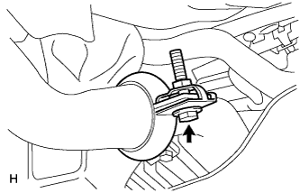

Fuel tank ASSY (1NZ-FE (4WD)) Remove |
| 1. Remove the rear seat back ASSY |
 |
Make the rear seat back in advance.
Remove the two clips in the figure in the figure.
 |
Turn over the rear seat back cover, remove the two bolts, and remove the rear seat back Assy.
| 2. Remove the rear seat cushion asy |
 |
Press the lock of the front lock in the direction of the arrow in the figure to remove it.
Pass the rear seat belt through the rear seat cushion cover and pad back rubber band.
Remove the hook at the rear hook at the rear seat cushion assembly, and remove the rear seat cushion assessy.
| 3. Remove the rear floor service hall cover |
 |
Turn the floor mat.
Remove the four screws and remove the rear floor service hall cover.
Cut the fuel pump connector.
| 4. Remove floor service hall cover No.2 |
 |
Remove the four screws and remove the rear floor service hall cover.
Cut the fuel sender gauge connector.
| 5.Fuel prevention work |
 |
Cut the connector for fuel pump ASSY.
Engine start
Start the engine.
After the engine stops naturally, turn off the ignition switch.
Crank the engine again and confirm that it will not start.
Remove the fuel tank cap and remove the pressure in the fuel tank.
Remove the battery's minihana stormy.
referenceAttach the fuel pump Assessed connector.
| 6. Fuel tank main tube cut off |
 |
Spread the tube joint clip and pull out in the direction of the arrow.
 |
Pull out the main tube and separate it.
| 7. Fuel suction tube Assy W/Pump & gauge removed |
Remove the eight bolts and remove the fuel tank vent tube set plate.
Cut the fuel hose in the figure and remove the fuel suction tube Assy W/Pump & Gauge from the fuel tank.
Remove the gasket from the fuel suction tube ASSY W/pump & gauge.
| 8. Fuel Senda Gauge ASSY |
Remove the 5 screws and remove the fuel sender gauge.
| 9. Pull out fuel |
| 10. Exhaust pipe ASSY CTR removes |
|  |
Remove the bolt and remove the exhaust pipe clamp.
Remove the two exhaust pipe support and remove the exhaust center pipe ASSY.
Remove the exhaust pipe gasket.
| 11. Proposhaft ASSY RR removed |
 |
Mark to match the propeller shaft ASSY RR and the differential flange.
 |
Mark to match the interview with the interview with the interview with the interview with the Interamed Eight Shaft Asshaft Asshaft ASSY RR.
Remove eight bolts, washer and eight nuts, and remove the propeller shaft Assisy RR.
| 12. Fuel tank protector No.1 |
Remove the four bolts and remove the No. 1 dynamic dampa and fuel tank protector.
| 13. Briza tube fuel hose No.1 |
 |
Cut the No. 1 bleeder tube fuel hose from the fuel tank.
Remove the No. 1 bleeder tube fuel hose from the clamp.
| 14. Fuel tank Tsufirappe hose cut off |
Cut the fuel tank Tsufira Pipe hose from the fuel tank.
| 15. Fuel tank main tube cut off |
As shown in the figure, apply force to the back part of the retainer with a finger, unlock, and pull out the fuel pump tube.
| 16. Fuel cut -off valve Assy (tube Tsuki) |
Pick the tube connector clip with your finger and pull out the connector and separate it.
| 17. Fuel tank ASSY removes |
 |
Remove the bolt and remove the cramp of the parking brake cable.
Remove the four bolts and remove the fuel tank.
| 18. Fuel tank cushion No.1 |
Remove the No. 1 fuel tank cushion.
| 19. Fuel cut -off valve Assy (tube Tsuki) |
Insert the clip -resver between the fuel cut -off valve and the gasket, and float the valve to push it up little by little.